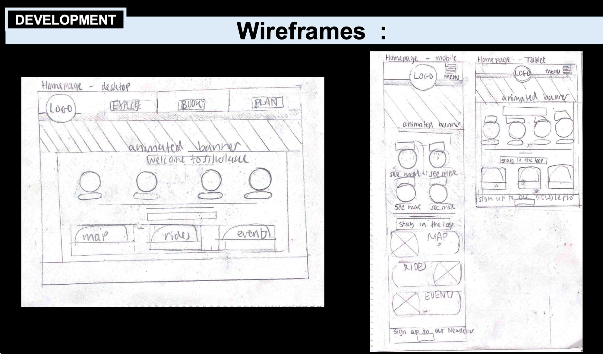
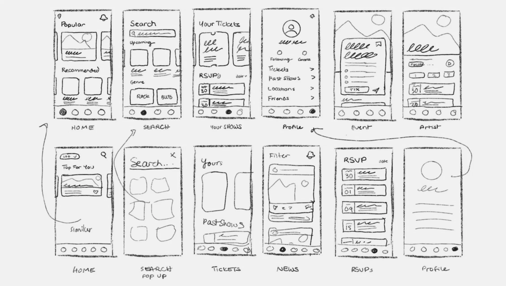
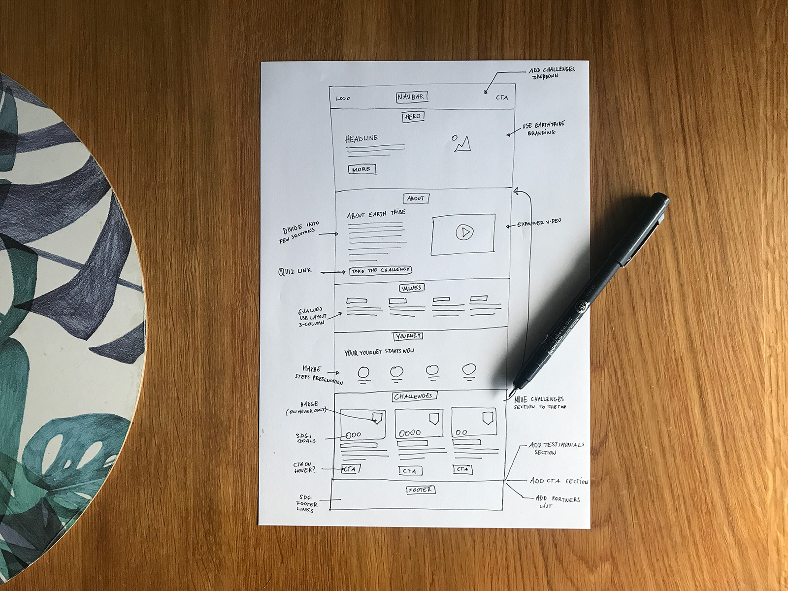
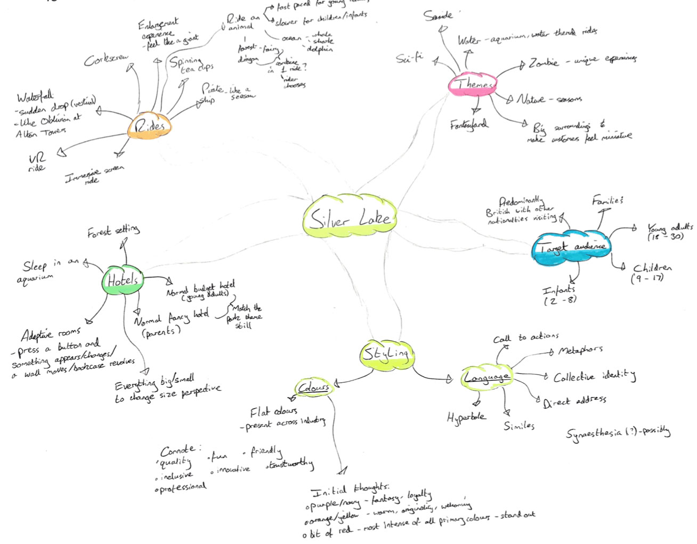
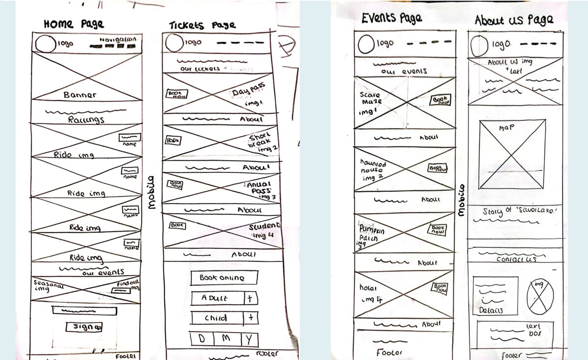
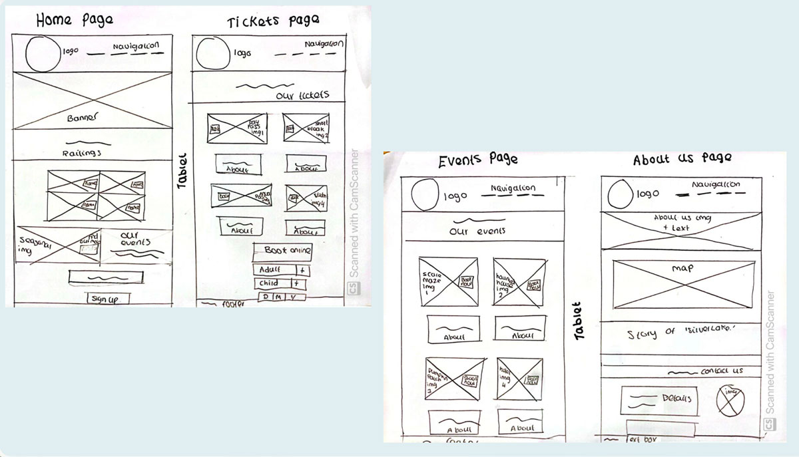

This week we'll explore the Silverlake Portfolio Task and learn about wireframing and mobile-first design principles to plan your theme park website.
In this tutorial
- Portfolio Task - Silverlake Theme Park
- Wireframing for websites
- Homework - Silverlake planning
The Silverlake Portfolio Task
This week's tutorial is a little bit different in that we will start by looking at the portfolio task. This is the final (and biggest) portfolio task but you will be creating a number of pages and planning documentation in order to complete it.
Portfolio Task - Silverlake Theme Park
Over the coming weeks, you'll be working on your main portfolio task: creating a website for Silverlake, a fictional theme park in Yorkshire.
Silverlake is an adventure theme park that has been built in the Yorkshire region. The exact theme of the park is for you to decide as are the names and nature of the attractions. Silverlake currently has no online presence. You should build a brand for the theme park and create a small website to advertise it. Additionally you will create supporting advertising material such as interactive banners. You must produce planning documents to show the process you have taken in conceptualising your designs.
What You Need to Submit (Week 13)
You will upload this task along with the 3 tasks that you completed in the first 6 weeks of the module (the about me page, the small business page and the leeds attractions page). The files for this task will sit alongside these tasks in the same skills-portfolio folder. There are 2 parts to this task
Part A: Conceptual & Development Work (Planning Document - PDF)
You will produce a Planning Document that you will hand-in as a single PDF to accompany your website. This will contain the following:
- A brief outline of the theme of your park and the main attractions you will advertise
- Individual research outlining other attraction websites which have influenced you
- Sketches and drawn wireframes that illustrate the look and feel of your intended website across different devices
- Other relevant planning material that may comprise but not be limited to mindmaps, mood boards and structure diagrams
- The final site design from figma
The material for this document can be a mix of hand-drawn/photographed or generated on a computer. If photographing work please make sure it is readable when in your PDF.
Part B: Responsive Website (HTML/CSS Code)
You will be shown how to construct a website with code. The website that you produce must be built in the way you are taught in class.
Requirements:
- Minimum of 4 pages of HTML
- Code must be validated using the W3C validation tool
- Website must be responsive and adapt its layout to suit both mobile and desktop devices
- Must contain some animated elements
- Built using techniques taught in class (hand coded and not using visual layout tools or templates)
Wireframing & Mobile-First Design
Before you start coding your Silverlake website, you need to plan its structure and layout. This is where wireframing comes in - a crucial step in the web design process that will save you time and ensure a better final result.
What are Wireframes?
A wireframe is a simple, low-fidelity visual guide that represents the skeletal framework of a website. Think of it as a blueprint or floor plan for your website - it shows the structure and layout without worrying about colors, images, or detailed styling.
🎥 Watch: Introduction to Wireframing
Watch this helpful video tutorial on wireframing:
Why Wireframe?
- Plan Before Coding - Saves time by working out layout problems on paper/digitally first
- Focus on UX - Ensures good user experience without distraction of visual design
- Easy to Change - Much faster to modify a sketch than to rewrite code
- Communication Tool - Helps explain your ideas to tutors, clients, or team members
- Required for Assignment - Part of your Planning Document for the Silverlake task
Visual Elements in Wireframes:
- Headers - Illustrated using thicker lines
- Body Text - Sketched using thinner lines or simple horizontal lines
- Images - Represented as rectangles with an X through them
- Buttons - Simple boxes with labels
- Navigation - Boxes or lines showing menu items
You don't need to be an artist! Simple boxes, lines, and basic shapes are all you need.
What Wireframes Include:
- Layout Structure - How content areas are arranged on the page
- Navigation - Where menus and links are positioned
- Content Hierarchy - Which elements are most important (headings, subheadings, body text)
- Functional Elements - Buttons, forms, search bars, etc.
- Image Placeholders - Where images will go (often shown as boxes with an X)
What Wireframes DON'T Include:
- Colors, fonts, or detailed styling
- Actual images or final content
- Animations or interactive effects
- Brand-specific visual elements


Hand-drawn wireframe example

Hand-drawn wireframe example
Mobile-First Design Philosophy
When creating wireframes (and later, when coding), you should adopt a mobile-first approach. This means designing for mobile devices first, then adapting the layout for larger screens like tablets and desktops.
Why Mobile-First?
- Mobile Usage is Dominant - Over 60% of web traffic now comes from mobile devices
- Forces Prioritization - Limited screen space makes you focus on essential content first
- Easier to Scale Up - It's easier to add features for larger screens than to remove them for mobile
- Better Performance - Mobile-first sites tend to load faster and use less bandwidth
- Assignment Requirement - Your Silverlake website must be responsive (mobile and desktop)
Mobile-First Thinking
When wireframing mobile-first, ask yourself:
- What is the most important content on this page?
- What single action should users be able to take easily?
- Can I simplify or condense this content for a small screen?
- Do navigation items need to be in a hamburger menu?
- Are buttons and tap targets large enough (minimum 44x44 pixels)?
The Wireframing Process
Step 1: Sketch Mobile Layout First
Start with pen and paper or a whiteboard. Draw simple boxes and lines to represent:
- Navigation (usually a hamburger menu icon on mobile)
- Logo/site name
- Main content areas
- Images (draw boxes with an X through them)
- Buttons and calls-to-action
- Footer
Step 2: Sketch Tablet/Desktop Layouts
Once you're happy with mobile, sketch how the layout adapts to larger screens:
- Navigation might become a horizontal menu bar
- Single columns might become two or three columns
- Content areas can be larger and more spacious
- Images can be bigger and more prominent
Step 3: Create Digital Wireframes (Optional)
You can digitize your sketches using tools like:
- Adobe Illustrator - Available on university computers
- Figma - Free online design tool (figma.com)
- Balsamiq - Dedicated wireframing tool
- Or simply take clear photos of your hand-drawn wireframes
For Your Assignment
Your Planning Document must include wireframes showing:
- All pages of your Silverlake website
- Mobile view for each page
- Desktop view for each page
- Tablet views for any pages where there would be slight changes from the desktop views
- Clear labels showing what each area represents
These can be hand-drawn and photographed, or created digitally - both are acceptable as long as they're clear and readable in your PDF.
Wireframing Resources
- Figma - Free design and wireframing tool
- Balsamiq Wireframing Tutorial
- Nielsen Norman Group - Wireframing Guide
Homework - Silverlake Planning
This week, you'll begin planning your Silverlake theme park website. Your homework is to complete the following three tasks:
Task 1: Decide on Your Theme Park's Theme
Think about what type of theme park Silverlake will be. Consider:
- What's the overall theme? (Adventure, fantasy, sci-fi, historical, aquatic, etc.)
- What makes your park unique and different from others?
- Who is your target audience? (Families, thrill-seekers, young children, etc.)
- List at least 6 attractions/rides with names that fit your chosen theme
Create a mind map to organize your ideas and brainstorm your theme park concept. This will help you visualize connections between your theme, attractions, target audience, and overall park identity. You'll need to include this in your Planning Document.

Task 2: Research Theme Park Websites
Research at least 3 theme park websites to help you gauge the type of content and layouts you could use for your own site.
Example Theme Park Websites to Research:
What to Look For:
- Overall design and visual appeal
- Color scheme and branding
- Navigation structure and user experience
- Types of content included (rides, attractions, booking, news, etc.)
- Use of images and media
- Layout patterns (hero sections, attraction grids, etc.)
- What you like and what you would do differently
Take screenshots and write notes - you'll need to include this research in your Planning Document.
Task 3: Wireframe Your Silverlake Homepage
You will need to create wireframes for all your Silverlake pages but to kick things off focus this week on creating the wireframe for your homepage.

Mobile wireframe example

Desktop wireframe example
Create Mobile and Desktop Wireframes for Your Theme Park Homepage
What to include on your homepage:
Use the theme park websites you researched to help you decide what content to include on your homepage. Look at what works well on their sites and what you'd like to adapt for your own design.
Your homepage might include elements such as:
- Site logo/name and navigation menu
- Hero section with eye-catching imagery and headline
- Featured attractions or rides
- Key information visitors need (opening times, location, tickets)
- Call-to-action buttons (e.g., "Plan Your Visit", "Book Now")
- Footer with contact details and social media links
Steps:
-
Mobile wireframe: Draw a vertical layout at smartphone width (portrait orientation)
- Stack elements vertically
- Use a hamburger menu icon
- Single column of attraction cards
- Keep it simple and prioritized
- Important: Mobile wireframes are often very tall/long because users scroll more on mobile devices. Don't try to cram everything into one screen - your wireframe should extend downward to show all the content as it would appear when scrolling. If your wireframe becomes too long for one sheet of paper, you can break it up into multiple columns side-by-side on the page
-
Desktop wireframe: Draw a wider horizontal layout
- Horizontal navigation bar
- Two or three columns where appropriate
- Attraction cards in a grid (2x3 or 3x3)
- More spacious layout
- Add labels to explain what each box/section represents
- Take a photo or scan your wireframes to save for your Planning Document
💡 Tips:
- Use simple boxes, lines, and basic shapes - don't worry about making it look pretty!
- Write notes and labels directly on your wireframes
- Think about user flow: what do you want visitors to do first?
- Compare with theme park websites you researched - what layouts work well?
- Don't include colors, images, or logos - keep it structural
Remember:
All of this work (theme notes, research screenshots, wireframes) will form part of your Planning Document PDF that you'll submit in Week 13. Keep everything organized and saved!